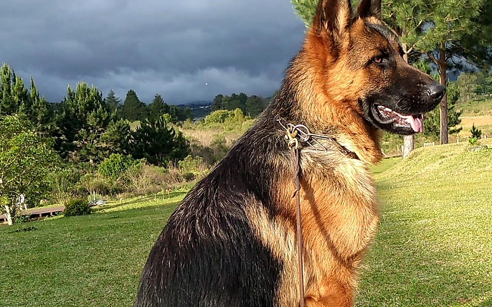
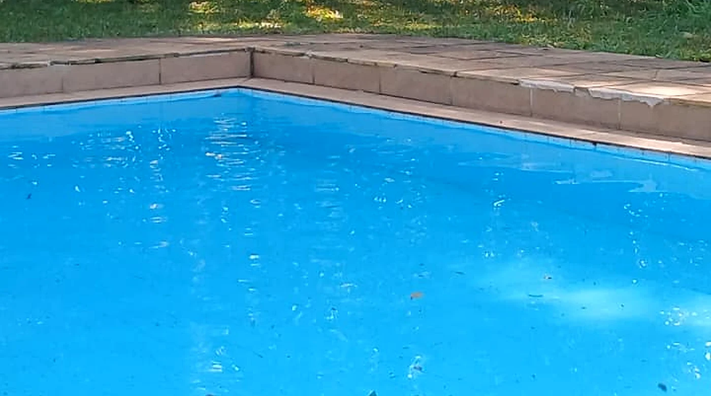
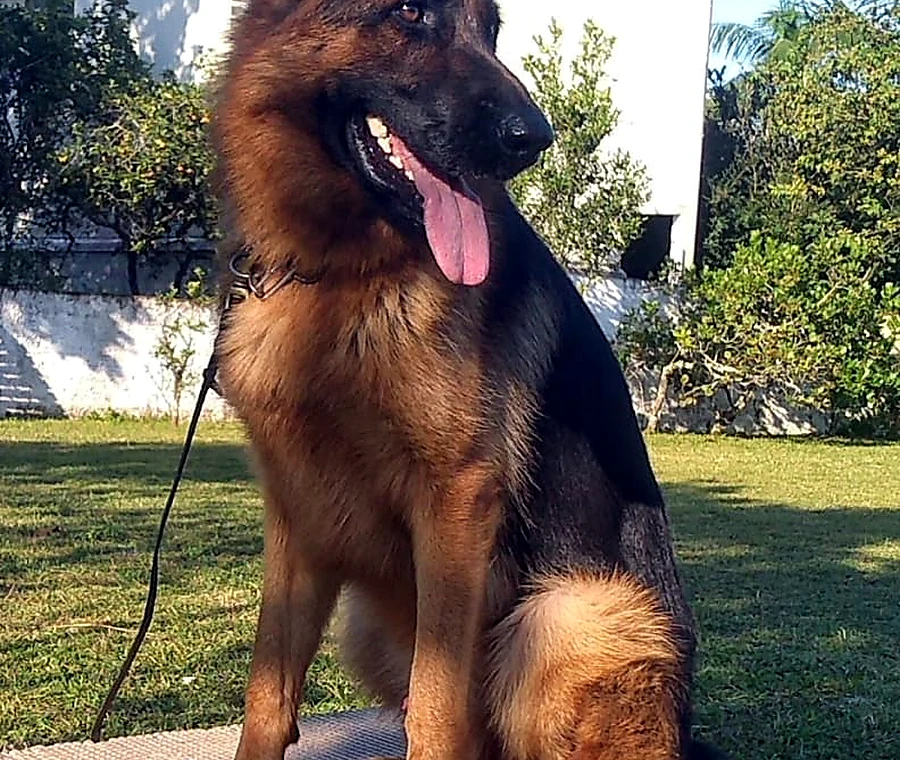
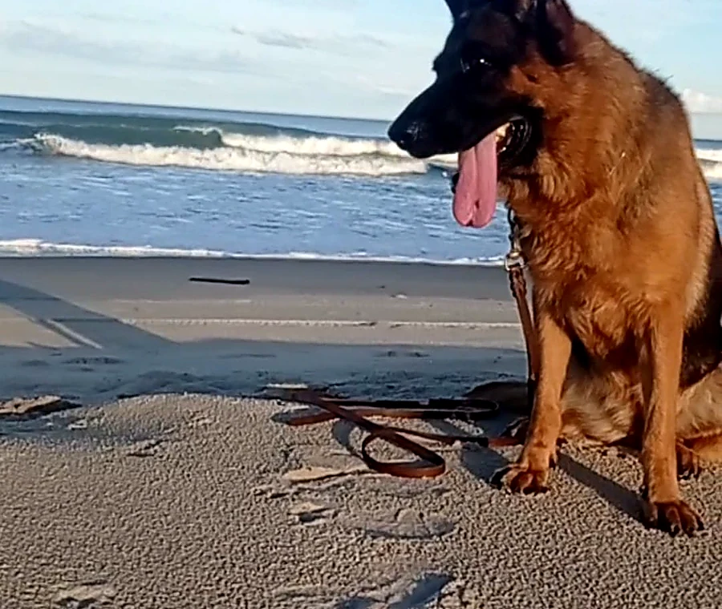
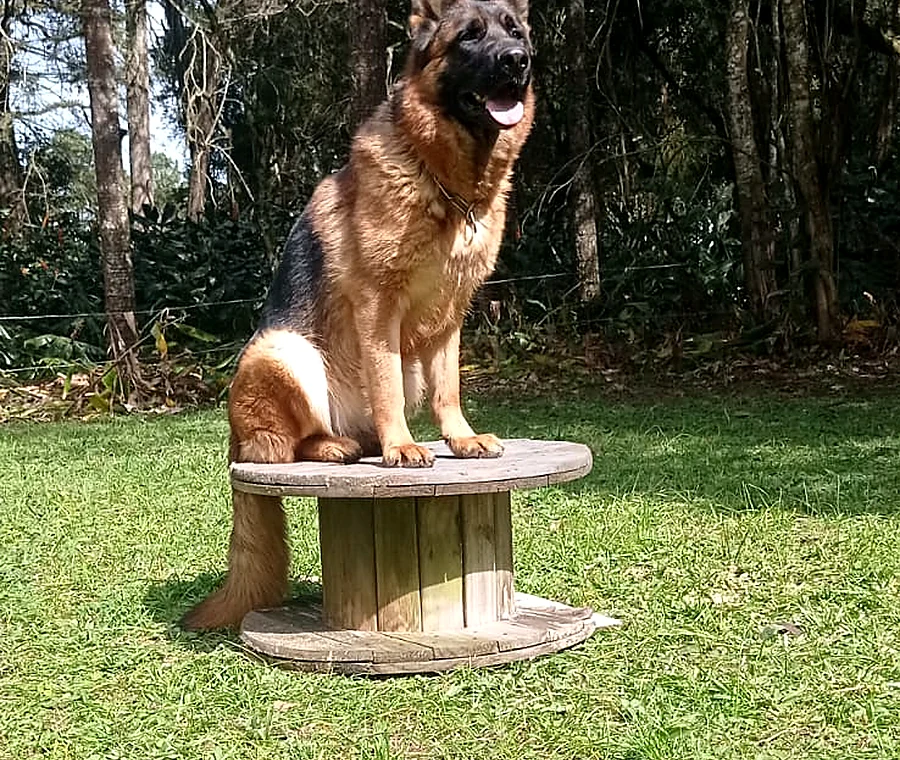
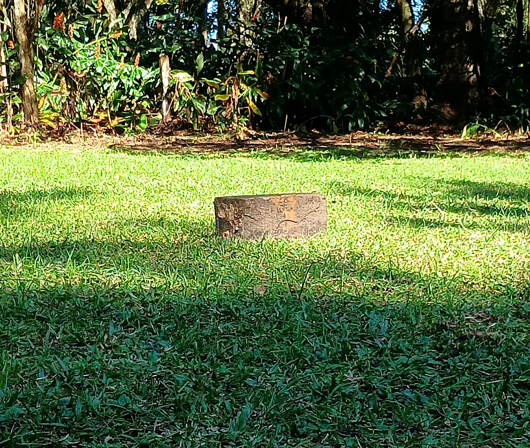
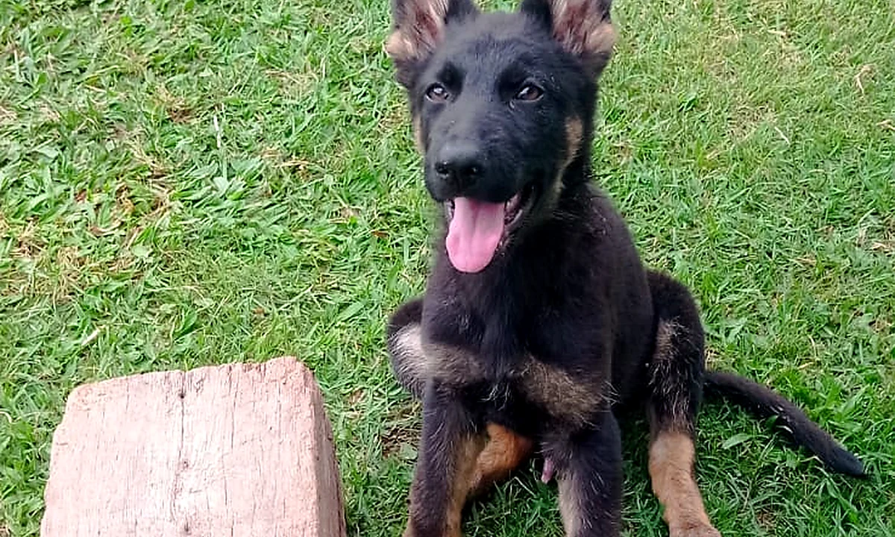

Função
Cães preparados para desempenho, trabalho e vida em família.
CANIL VON HAUS SOTTER
O Canil Von Haus Sotter, em Curitiba (Paraná), é especializado na raça Pastor Alemão. Aqui, genética de excelência, função, saúde e equilíbrio se unem em um ambiente seguro, amplo e cercado pela natureza.

Cães preparados para desempenho, trabalho e vida em família.
Controle de displasia e protocolos de saúde em todas as fases.
Padrões da raça mantidos com estética, beleza e qualidade genética.
Temperamento estável, bem-estar e equilíbrio físico e mental.
CUIDADO EM CADA FASE
Canil especializado na raça. Filhotes vacinados, com carteira de vacinação, desverminados e microchipados.
Excelência em genética, com cães com controle de displasia, função, saúde e beleza em equilíbrio.
Hospedagem para o seu cão, com conforto, rotina e cuidado em ambiente cercado pela natureza.
Creche para cães, alinhada à proposta de inclusão, educação, convivência e lazer da marca.
Convívio, educação, estímulos e momentos de lazer com o Pastor Alemão em uma rotina completa.
SOBRE O CANIL
Nosso canil está cercado pela natureza e conta com ampla área verde, piscina, espaços sombreados e campo para treinamentos. Um ambiente completo para o desenvolvimento físico e emocional dos cães.

NOSSA ROTINA E ESTRUTURA





FILHOTES
Nossos filhotes crescem com amor, saúde e estímulos diários em um ambiente seguro, com natureza e cuidados profissionais.
DÚVIDAS FREQUENTES
Fale pelo WhatsApp para receber as informações atualizadas sobre disponibilidade, ninhada e próximos passos.
Sim. A estrutura conta com ampla área verde e campo para treinamentos e atividades ao ar livre.
Sim. O canil oferece hospedagem e creche com rotina voltada ao bem-estar, convivência, educação e lazer.